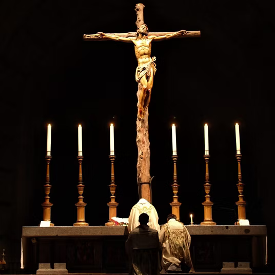
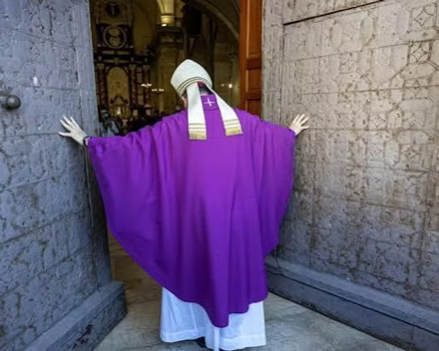
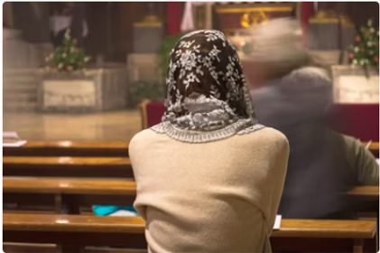
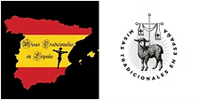

Preservando la Tradición

Se ha convertido en nuestro, el mandato que nos dio Nuestro Señor Jesucristo. Por eso damos a conocer que es la Misa Tradicional, como herencia litúrgica, testimonio y bien de interés cultural de la humanidad.
La Misa Tradicional (también conocida como Misa Tridentina, Misa en latín o Vetus Ordo) es la forma de celebración de la Eucaristía en el Rito Romano que prevaleció en la Iglesia Católica durante siglos. Su historia no comenzó con una invención repentina, sino que es el fruto de un desarrollo orgánico y milenario desde los primeros doce Apóstoles, testigos de la Última Cena instituida por N.S. Jesucristo.
La Santa Misa nace directamente de las primeras comunidades cristianas que usaban el arameo y el griego. Hacia el siglo III, el latín sustituyó progresivamente al griego como la lengua oficial de la liturgia en Roma por ser el idioma común del Imperio Romano.
En esta época primitiva se estructuró el Canon Romano, la gran oración eucarística central que permaneció prácticamente intacta con el paso del tiempo.
En el siglo VI, se realizó una reforma por el Papa San Gregorio Magno, el cual fijó las lecturas y oraciones fundamentales del rito Católico de la Iglesia de Roma.
Desde el siglo VI, la Misa permaneció inalterada hasta que en el año 1570 (Siglo XVI), tras el Concilio de Trento, el Papa San Pío V unificó el rito litúrgico para toda la Iglesia Latina a través de la bula Quo Primum Tempore. El adjetivo "Tridentina" le viene de este concilio (Tridentinum en latín).

Este concilio purificó las alteraciones locales acumuladas durante la Edad Media y se estableció una norma oficial para celebrar la Misa Católica, que combatía las desviaciones teológicas de la Reforma Protestante.
Durante los siguientes 400 años, este misal fue el de uso litúrgico mayoritario en la Iglesia Latina y rigió la liturgia católica global con mínimas variaciones locales, tales como el rito ambrosiano en Milán, el rito mozárabe en España o los ritos católicos orientales —entre ellos, el rito bizantino, alejandrino, antioqueno, armenio y caldeo/siríaco—, practicados por comunidades orientales unidas a Roma.
Los rasgos más distintivos de la liturgia católica romana tradicional, son:
- Uso exclusivo del latín: Al utilizar una lengua muerta como es el Latín, se rompen las barreras nacionales y lingüísticas, manifestando visual y auditivamente que la Iglesia es una sola comunidad global. Se produce un símbolo de universalidad, frente a los cambios locales y temporales, que una lengua viva produce. El latín permite que cualquier católico del mundo, sin importar su país de origen o su idioma nativo, pueda asistir a la Misa en cualquier rincón del planeta y comprender perfectamente el rito usando sus respectivos misales o guías para seguir la Misa en su idioma. Además las lenguas modernas cambian constantemente y las palabras adquieren nuevos matices. El latín garantiza que las verdades de la fe (los dogmas) expresadas en las oraciones de la Misa permanezcan intactas y no sufran malas interpretaciones o herejías con el tiempo.
- Orientación Ad Orientem: Esta práctica hereda la tradición del Antiguo Testamento, donde el Sumo Sacerdote y el pueblo rezaban orientados hacia el Sancta Sanctorum (el Santo de los Santos). Desde los primeros siglos, los cristianos identificaron a Jesucristo con el "Sol que nace de lo alto" (Lucas 1, 78) o el "Sol de Justicia" (Malaquías 4, 2). La tradición de la Iglesia y las Sagradas Escrituras sugieren que Cristo regresará en su Segunda Venida (Parusía) desde el Oriente, tal como el relámpago que sale del oriente y se muestra hasta el occidente (Mateo 24, 27). Rezar hacia el Este es un acto de vigilante espera de su retorno. Por eso el sacerdote y los fieles miran juntos en la misma dirección (hacia el altar o el sagrario), orientados litúrgicamente al este, esperando el regreso de Cristo Victorioso.

Para los fieles de la Misa Tradicional, mirar el altar y la cruz en lugar del rostro del sacerdote ayuda a fomentar el recogimiento interior, la oración y la contemplación del misterio sagrado, la figura física e individual del sacerdote pasa a un segundo plano, evitando la tentación de que la Misa se convierta en un "espectáculo" o un diálogo cerrado entre el sacerdote y la asamblea. El foco de atención absoluto ya no es la personalidad del celebrante, sino Dios presente en el Sagrario y el misterio del altar.
- Sentido sacrificial y sacro: Se enfatiza el misterio de la Cruz de forma solemne, incorporando de manera central el silencio sagrado, genuflexiones constantes y la comunión de rodillas y en la boca.
En la Misa Tradicional, el altar es el monte Calvario. El sacerdote actúa como el mediador (en la persona de Cristo) que lidera al pueblo de Dios en un viaje espiritual. Al mirar todos hacia el altar, se visualiza a una comunidad en marcha, como un barco donde el capitán (el sacerdote) mira hacia adelante, en la misma dirección que la tripulación y los pasajeros.
Cuando el sacerdote se dirige a Dios para ofrecer el sacrificio o rezar las oraciones, mira hacia el crucifijo y el sagrario (el epicentro de la adoración). Solo se gira hacia el pueblo cuando les habla directamente a ellos (por ejemplo, al decir "Dominus vobiscum" / El Señor esté con vosotros).
La Misa Tradicional concibe la Eucaristía, ante todo, como la renovación incruenta (sin derramamiento de sangre) del Sacrificio de la Cruz. Mientras que la mentalidad contemporánea de la Misa Novus Ordo, suele subrayar la Misa como un "banquete fraterno" o una "asamblea comunitaria", el rito tradicional enfoca cada palabra, gesto y silencio en el misterio del Gólgota.

Desde el concilio de Trento en el año 1570 hasta Concilio Vaticano II, en el que el Papa Pablo VI promulgó en 1969 un nuevo Misal Romano (Novus Ordo), esta Misa era la Misa de la Cristiandad en Occidente.
Tras el Concilio Vaticano II, se introdujeron las lenguas vernáculas (locales), permitiendo celebrar la misa en el idioma local de cada país (como el español) en lugar de usar exclusivamente el latín, el sacerdote pasó a celebrar de cara al pueblo (versus populum) y se simplificaron (resumieron) los rituales litúrgicos.
Esta nueva forma se popularizo y la Misa antigua quedó relegada de forma casi generalizada. El Papa Benedicto XVI en Summorum Pontificum (2007), rehabilitó el uso de la Misa de 1962 declarándola como la "Forma Extraordinaria del Rito Romano", aclarando que este tesoro litúrgico nunca había sido jurídicamente prohibida ni derogada.
El Papa Francisco en Traditionis Custodes (2021), mediante un motu proprio, cedió a los obispos diocesanos la autoridad exclusiva de regular y autorizar dónde y cuándo puede celebrarse este rito en los territorios bajo su jurisdicción.

Te puede interesar el misal virtual, para seguir la Santa Misa en Latín pincha aquí.
¿Donde se celebra?
En esta web, se enlaza con un directorio visual y accesible, recopilando los sitios en España, donde gracias a Dios, se sigue celebrando este tesoro inmemorial de la Iglesia Católica y de la Humanidad.

Damos gracias a todos los Obispos que, por su mediación, han abierto la puerta a que este bien de interés cultural de la humanidad, en su forma más antigua (aquella que desde los apóstoles nos ha sido transmitida), siga presente en la Iglesia Católica de Occidente, asegurando que esta tradición sagrada sea un refugio de fe y un testimonio para las nuevas generaciones, hasta que regrese Nuestro Señor Jesucristo.

Para ver el mapa de España donde se celebran las Misas Tradicionales a pantalla completa pincha aquí.
Contacto y Sugerencias


Si quieres ponerte en contacto con nosotros, actualizar los datos o añadir alguna iglesia envíanos un correo a: misatradiconalenespana@gmail.com
Misa Tradicional en España© - 2026
